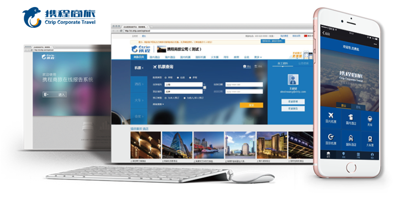
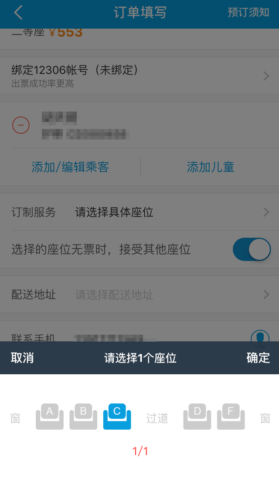
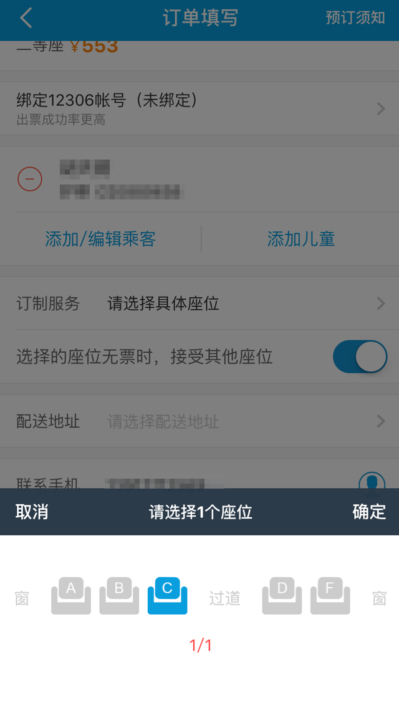

携程商旅企业差旅管理平台
微信企业号差旅管理套件
微信企业号差旅管理套件
机票、酒店、火车、用车商务出行说走就走
月结、预存、现付结算灵活
在线差旅管理报告、公对公结算合规透明
差旅管控、独有价格优势节省高达30%差旅费
月结、预存、现付结算灵活
在线差旅管理报告、公对公结算合规透明
差旅管控、独有价格优势节省高达30%差旅费
差旅部署：
一键安装、全员推广、切实执行。
一键安装、全员推广、切实执行。
微信企业号管理员PC打开qy.ctripbiz.com “立即开通”携程商旅 ，进入差旅管理，设置企业差旅政策、申请月结、预存、授权审批体系，即可极速部署到企业内部。
立即开通后企业号管理员直接跳转至“携程商旅”差旅管理页面

差旅预订：
一站式服务，商务出行说走就走
一站式服务，商务出行说走就走
丰富的产品资源、顺畅的预订系统、与7×24小时全天候专业服务让商务出行前所未有的便捷舒心；
机票、酒店、火车票、用车、签证等商旅出行服务，一站式的解决所有差旅出行需求，无需多平台跳转，避免重复沟通，差旅出行，轻松搞定。
机票、酒店、火车票、用车、签证等商旅出行服务，一站式的解决所有差旅出行需求，无需多平台跳转，避免重复沟通，差旅出行，轻松搞定。
差旅管控：
助力企业实现高达30%差旅费用节省
助力企业实现高达30%差旅费用节省
事前制定合理的差旅标准
事中管控、审批授权
事后分析追溯
帮助企业实现高达30%差旅费用节省。
事中管控、审批授权
事后分析追溯
帮助企业实现高达30%差旅费用节省。
差旅结算：
月结、预存、现付多种差旅费结算方式，
公对公结算合规透明
月结、预存、现付多种差旅费结算方式，
公对公结算合规透明
差旅报告：
在线差旅管理报告、差旅消费清晰明了
在线差旅管理报告、差旅消费清晰明了
携程商旅提供专业的差旅管理报告，除了记录各项消费明细与审批数据，更让各部门的节省力度清晰展现，各类管理指标一目了然。基于真实消费数据的专业差旅报告，能够更加合理的指导预算制定，控制成本，提升效率。
差旅预订
打开手机微信 选择公司微信企业号 点击已安装应用：携程商旅 首次点击任意菜单即可完成“无痛开卡”登录
进入预订 机票、酒店、火车、用车四大产品满足出行需求 因公、因私兼顾工作与生活
开通公司账户支付客户 预订直接选择公司账户支付，解决员工垫资烦恼
提交订单邮件通知授权人授权 授权状态随时查询，授权通过立即出票
实时刷新航班状态、时刻表，多个航班一手掌握！ 在线值机，简单快捷，节省您的宝贵时间！
火车票预订支持在线选座 
用车服务提前预约接送机省去排队打车烦恼
进入预订 机票、酒店、火车、用车四大产品满足出行需求 因公、因私兼顾工作与生活
开通公司账户支付客户 预订直接选择公司账户支付，解决员工垫资烦恼
提交订单邮件通知授权人授权 授权状态随时查询，授权通过立即出票
实时刷新航班状态、时刻表，多个航班一手掌握！ 在线值机，简单快捷，节省您的宝贵时间！
火车票预订支持在线选座 
用车服务提前预约接送机省去排队打车烦恼